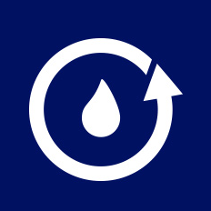

א.נ.ג.ר אקולוגיהלפתיחת הכלי ←ממלאים. חותמים.
הדוח מוכן לשליחה.
1. בוחרים את הטופס
חיטוי מאגר מים, חיטוי צנרת בבית פרטי או בדיקת מז״ח. לעבודה אמיתית בוחרים ״פתיחת טופס ריק״. להתנסות בוחרים ״נסו דוגמה מלאה״.
2. ממלאים וחותמים
משלימים את פרטי העבודה, מסמנים את הפעולות או תוצאות הבדיקה, וחותמים באצבע או בעכבר. אפשר לצרף שתי תמונות ולשמור את פרטי המבצע לטופס הבא באותו מכשיר.
3. מפיקים PDF ומשתפים
לוחצים ״הפקת PDF ושליחה״ ובודקים את הדוח. בטלפון התומך בשיתוף קבצים בוחרים WhatsApp או אפליקציית אימייל מתפריט השיתוף. במחשב מורידים את ה־PDF, פותחים הודעה מוכנה דרך הכפתור ומצרפים את הקובץ לפני השליחה.
הטיוטה נשמרת במכשיר הזה בלבד. אין חשבון, אין בסיס נתונים ואין סנכרון בין מכשירים. בסיום שומרים או משתפים את ה־PDF.
הדוחות מבוססים על שלושת הטפסים שנמסרו. הנתונים והחתימה מוזנים בידי המבצע. בדיקת הנתונים המקצועיים ושליחת הדוח נעשות על ידו.